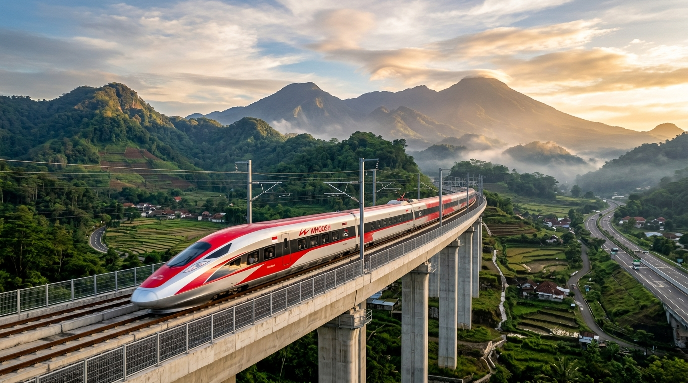

RailNusa
Integrasi Cerdas Kereta Cepat Whoosh & Koridor Rel Nasional
“Konektivitas Cepat, Dekarbonisasi Berkelanjutan, dan Efisiensi Logistik Nasional.”
Dirancang untuk monitoring intermodal terpadu: dari koridor Kereta Cepat Whoosh (Halim–Tegalluar 350 km/h), LRT Jabodebek, hingga jalur strategis Divre I Sumatera Utara & Akses KSPN Danau Toba (Poros Laguboti / Kampus Del).
350 km/h
Kecepatan Whoosh
99.4%
On-Time Performance
-85%
Reduksi Emisi CO2

Kecepatan
348 km/h
Kereta Cepat Whoosh Indonesia
Elevated High-Speed Viaduct Jawa Barat • Waktu Tempuh 45 Menit
Halim (08:00) ➔ Padalarang Hub (08:32) ➔ Tegalluar (08:45) • Kecepatan Puncak 350 km/h
One Platform. Complete Journey.
Explore the six core pillars powering smart, predictable, and stress-free passenger rail mobility across Indonesia.
1. Smart Journey Planner
Calculate multi-segment routes with preferences for fastest travel, lowest budget, fewest transfers, or minimal carbon emissions.
Plan a route2. Railway Map
Interactive geospatial visualization of operational corridors, station nodes, transfer hubs, and live train positions on Leaflet.
Explore map3. Train Tracking
Simulated real-time train telemetry monitoring speed, intermediate station ETAs, segment progress bars, and schedule variance.
Track active trains4. Station Guide
Detailed station directories with facility markers (prayer rooms, parking, accessibility, taxis), platform layouts, and departure gates.
Browse stations5. Travel Assistant
RailNusa AI conversation partner recommending smart itineraries, weather-adaptive packing lists, and multi-modal connection times.
Consult RailNusa AI6. Service Alerts
Automated disruption alerts with instant alternative routing, delay compensation estimates, and smart itinerary re-booking.
Check active alerts